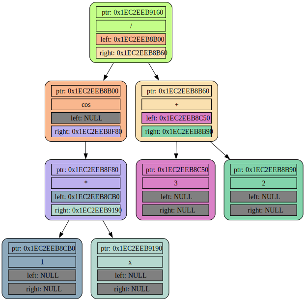
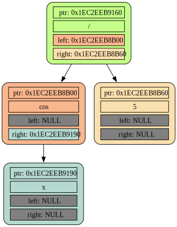
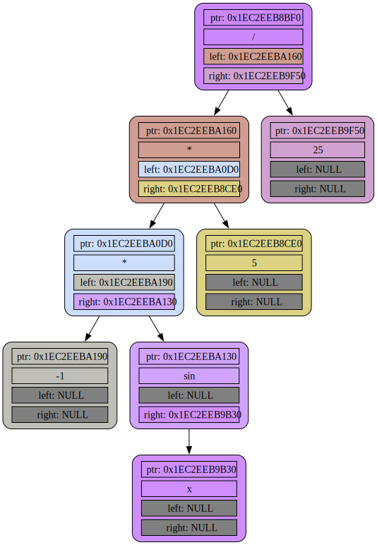

Dump after ParseBase:
TreeDump called from main.cpp, function: main, line 16, list name: forest
(cos ((1) * (ê))) / (3 + 2)

Dump after ConvolConst and RemovingNeutral:
TreeDump called from main.cpp, function: main, line 20, list name: forest
(cos (ê)) / (5)

Dump after Differentiation:
TreeDump called from main.cpp, function: main, line 23, list name: forest
(cos (ê)) / (5)

Dump after second ConvolConst and RemovingNeutral:
TreeDump called from main.cpp, function: main, line 27, list name: forest
(((-1) * (sin (ê))) * (5)) / (25)
